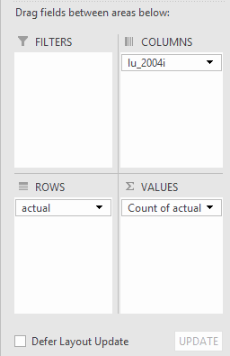
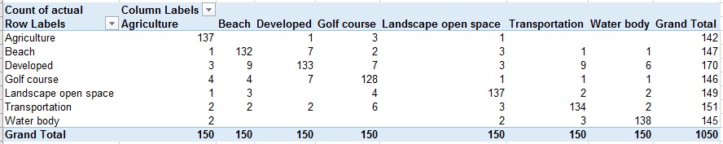
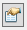

Accuracy assessment
Change detection based on thematic maps, such
as our cover type maps, is actually a measure of difference between two maps. Differences between the maps reflect
actual changes on the ground only if the maps are accurate reflections of the actual land cover in the mapped
area. Since we interpret mismatches between the maps as changes on the ground, in general we would expect errors
in mapping to inflate our estimates of the amount of change that has occurred. However, cover type maps are often
updated rather than created from scratch each time, which means that our 2018 cover type map is an updated version
of the 2004 cover type map. If a change occurred on the ground that was not recorded in the updated map, then the
2004 and 2018 maps will be more similar than they should be, and will underestimate the amount of change on the
ground.
A good ecological monitor will want to know how reliable their data is, and any change detection project should
include an assessment of map accuracy. We will address to questions today:
- How accurate are the two cover type maps, from 2004 and 2018, that we used to assess change in cover type?
- When the two maps do not match, how often is this because of an actual change on the ground, instead of a
mapping error?
The basic road map for the day is:
- Compare a landuse_union map with NAIP images from 2005 and 2018
- For a sample of points, compare the cover type recorded in the map with the land cover seen in the NAIP image
taken at the same time. This step will be done using the polygons that have the same cover type in both years
(this is a convenience, but it isn't necessary - you could have a separate set of points for 2004 and 2018)
- For polygons that have different cover types in 2004 and 2018, compare the images to see if there was in fact
a change in land cover at those locations
A good accuracy assessment should work with a large sample of points, so we will divide up the work. We will be
working with a simplified version of the maps (I don't expect you'll be able to tell the difference between
apartment houses, commercial developments, and municipal buildings from above, so these are all combined into a
"developed" category), so we will only have seven cover types to check: Agriculture, Beach, Developed, Golf
course, Landscape open space, Transportation, and Water body. Each student will check 5 points for each of the 7
cover types in each map (35 each year, 70 total), which will produce just over 1000 points to use for accuracy
assessment of each map. Additionally, each student will check 10 mismatched cover types between the two maps,
which we will use to see how often mismatches between maps are due to changes on the ground - this will give us
300 points to assess this issue. Each student will thus check 80 points total.
You will upload an Excel file with your work, and I will compile them into a class data set from which you can do
the accuracy statistic calculations for your reports.
Compare mapped cover types to images taken at the time
1. First we will select the points you personally will be checking - that way you can just use the point
attribute table and the NAIP images to do your checking.
- Add random_points_2004.shp to your project - these are points that were generated at random, with an equal
number generated for each cover type. If you open the attribute table you'll see there is not much information -
there is an FID column that is a unique number for each point, the Shape column that identifies the features as
Point, and a CID column that identifies the cover type with a number from 0 to 6 (don't worry about what the
numbers mean, we'll add that information shortly). The first thing we want to do it to select the points that
you personally are responsible for, which is done by...
- Add the "accuracy" worksheet from the "error_checking_assignments.xlsx" worksheet - click on the add layer
button, double-click on "error_checking_assignments.xlsx", and then select "accuracy$", and click "Add". If you
right-click and open this worksheet you'll see that it's a list of the point FID's and names of students in the
class - you can close the table. We want to join the information in this worksheet with the attribute table for
random_points_2004.shp, which is done by...
- Right-click on random_points_2004 in your table of contents, and select "Joins and Relates" → "Join" , which
will bring up the "Join Data" window.
- For 1. Choose the field in this layer that the join will be based on, drop down the list and pick "FID" - we
need to select a column from the random_points_2004 attribute table that matches between the tables, and I
used FID in the accuracy$ worksheet, so pick FID here.
- There is only one table in the table of contents, so ArcMap correctly guesses that's the one we want,
and it also notices that there is an FID column in accuracy$, so it selects that as the join field for
accuracy$. If ArcMap guesses wrong (because there is more than one table available, or the names of the
matching columns aren't the same between the tables) you could adjust these settings as needed.
- Click "OK" to join the student assignments to the random points
It won't look like anything happened, but if you open the attribute table for random_points_2004.shp again you'll
see the "FID" column is repeated, and "Student" is now part of the attribute table. This is only a temporary thing
- joining tables doesn't alter the data in either, and if we remove the join everything goes back to its original
state, but for the most part we can act as though Student is part of the attribute table now. To select your own
points:
- With the attribute table open, drop down the menu in the upper left corner of the window and select "Select by
attribute".
- In the Select by Attributes window, double-click on "accuracy$Student" to add it to the WHERE clause window.
- Click the = button
- Click "Get Unique Values" - this will display all the names in the Student field. Find your name and
double-click to add it to the WHERE clause
- Click "Apply" and the points that are assigned to you should be highlighted (there should be 35 of them
selected)
- Close the attribute table
Now you should see a collection of points are selected on the map. Right-click on random_points_2004 and find
"Selection" → "Create layer from selected features" - this will add what looks like a new point layer to your
table of contents that only has the points you're responsible for in it (you can turn off random_points_2004 so
you can see them better). This too is a temporary thing, it's a convenience that makes it easier to work with a
subset of the data, but no new file has been created yet. But, with this selection you'll be able to get the land
uses from the 2004 and 2008 maps attached to your own points, and placed in a separate layer in your database.
2. Now we will overlay your own points with the landuse_union_to_check.shp file. Add this file to your project.
Next we will intersect your random points with the landuse_union_to_check layer. Intersection is like union,
except that only overlapping features are maintained in the output. If you intersect a point feature with a
polygon feature then all of the points that overlap with a polygon will be copied into the output, and the polygon
attributes will be added to its attribute table. We'll take advantage of this last part to get the land uses from
the 2004 and 2018 maps that are columns in the landuse_union_to_check_layer added to the points you personally
will be checking. This output will be a new file, which you'll add to your database.
- From the menu, select "Geoprocessing" → "Intersect"
- In the "Intersect" window select "Random_points_2004 selection" (your points), and then
"landuse_union_to_check" as "Input Features".
- Put the "Output Feature Class" into your monitoring.mdb file, and call the output "my_2004_points"
- Click "OK" to run the intersection
When the output is placed into your table of contents open the attribute table - you should see all 35 of your
points there, with all the columns from landuse_union_to_check in it. These are just the 2004 points, so several
of the columns aren't needed - to clean up the file and make the checking easier...
- Right-click over "CID" and select "Delete field", and confirm you're serious when it asks
- Repeat this for every column EXCEPT FID, Shape, lu_2004i, and FID_random_points_2004
3. Repeat steps 1 and 2 for 2018. You will need to do this for the 2018 random points as well - load the 2018
random points, join the accuracy$ sheet to it, select the points you will check and make a layer with them, and
then overlay your 2018 points with the landuse_union_to_check file (call the output layer my_2018_points, of
couse). Once you have it you can delete all the fields EXCEPT FID Shape, FID_random_points_2018, and lu_2018i.
And, one more time, repeat the steps using "random_points_changes". You can join the Excel sheet called
"changes$" to its attribute table, select the points you're assigned to, make a layer from the selection,
intersect it with landuse_union_to_check (call the layer "my_changes"), and then delete all the fields but FID,
Shape, FID_random_points_changes, lu_2004i, and lu_2018i
You're ready to do the checking - you can remove everything from your table of contents except for the three "my"
points files (my_2004, my_2018, and my_changes).
4. Download this file, called "accuracy_check_sheet.xlsx", and open it
in Excel - you will record your results in it. You will need to upload your completed worksheet to the class web
site, but it's fine to download it to your computer and use your own copy of Excel (or whatever spreadsheet you
use that can open and save Excel files), you don't need to use Excel through CougarApps to complete this step).
Add the NAIP layers from the lab7 folder on the P: drive - there are two from 2005 (Caliornia CIR 2005.lyr and
NAIP 2005.lyr) because they did not make a 4-band image available that year, and to get color infrared we needed a
second layer file. There is just one layer for 2018, NAIP 2018 4Band.lyr.
We'll start by checking the 2004 points:
- Turn off all by my_2004_points, and the two 2005 NAIP images - put the points on top of the image.
- We'll use lu_2004i as a label for the features - double-click on my_2004_points and switch to the "Labels"
tab.
- Check the "Label features in this layer" check box, and leave the Method at "Label all the features the same
way".
- In the "Text String" box drop down the "Label Field" menu and select "lu_2004i". You can make the labels
bigger and change their color if you need to to make them easier to see against the images (yellow or bright
green work well and 10-12 point is a good size).
- Click "OK" and you should see the land uses recorded in the 2004 maps displayed next to the points.
- Zoom into the first points (work from the ocean to the inland). In your Excel sheet, record what the 2004
cover type map says the point is in (based on the label), and what it actually was in 2005 based on the NAIP
images. You may not need both versions of the 2005 NAIP image, but you can use the swipe tool to look first at
the CIR and then at the regular visible light image to help you decide the cover type if it is not clear from
just one or the other. If you decide the land cover is different from what the land use map says it is, pick one
of the cover types from the map for what it actually is - the Excel sheet is set up to only accept one of the
cover types used in the map, so you must use either Agriculture, Beach, Developed, Golf course, Landscape open
space, Transportation, or Water body.
- To help you remember which points you checked, right-click in the button bar area (away from any of the
existing buttons, in the gray background) and select "Draw" - if you click on the rectangle tool you can use it
to draw over each point as you finish them. Drawings don't become part of the point data, they are just used to
annotate the maps.
Work through all 35 of your 2004 points, and then do your 35 points for 2018 the same way - before you start,
clear the rectangles you drew on the map use "Edit" → "Select All Elements" and then hit the "Delete" key so that
you can start fresh with the 2018 points. Use the 2018 NAIP image, and if you can't tell what a cover type is with
a true color image feel free to set the red channel to Band 4 to get a color infrared image.
To do your 10 points for areas that differed between 2004 and 2018, turn on the 2018 NAIP and one or both of the
2005 NAIP's, and overlay the my_changes points (delete the rectangles you drew for the 2018 points before you
start). For the labeling we can get a little creative:
- Double-click on my_changes, and switch to "Labels"
- For the "Label Field" click on "Expression" - we're going to make a label that combines the 2004 and 2018
cover types at each point
- In the "Expression" box we are going to build the label, using a combination of text that will be copied
literally into the label, and text that will come from lu_2004i and lu_2018i from the attribute table. The
syntax is (feel free to copy/paste this):
"2004: " + [lu_2004i] + ", 2018: " + [lu_2018i]
- The text in the quotes is used literally, with no change - the quoted text labels the year. The two entries
within square brackets, [lu_2004i] and [lu_2018i], means "insert the contents of lu_2004i here" and "insert
the contents of lu_2018i here", respectively. The literal, quoted text is combined with the values taken from
the attribute table by placing a + in between the parts (and outside of the quotes). Spaces and punctuation
are included in the literal text parts, so "2004: " will write 2004 with a colon and a space after it for
every label, and ", 2018: " puts a comma after the land use from 2004, a space before the 2018 label, and a
colon and a space after the 2018 label.
- Click "OK" to get the labels added - you should see something like "2004: Landscape open space, 2018:
Agriculture" as the label
Now set 2005's NAIP over 2018's, and use the swipe
tool to check if the "change" indicated by the land use maps is correct. For these points record what the 2004
land use map says the cover type was and what it actually was based on the 2005 NAIP, as well as what the 2018
land use map says the cover type was then and what it actually was based on the 2018 NAIP image.
5. Once you're done, upload your Excel sheet to the
class web site, and I will compile all the data into a single worksheet.
When I've uploaded the class file, you can move on
to the next section.
Once the class file is available, make a "confusion matrix" that compares what the map claims is present to what
you found in the images
Download the class file that I post for you - it will be called accuracy_class_data.xlsx in Excel and open it.
You will see it is organized the same way as your own file, but compiled across all the students. Open it in Excel
(this doesn't have to be done through CougarApps, you can use the version of Excel you have installed on your own
computer, just be aware that things might look and work slightly differently if you're using a different version
of Excel).
Each confusion matrix will be compiled from each accuracy check data set, one for 2004, one for 2018, and one for
the changes, so you will have a worksheet for each one. We'll start with the 2004 sheet.
- Select a cell from within the 2004 data (any cell will work, but one of the two column labels is a good
choice)
- In the "Insert" tab, click "PivotTable"
- Use the default data range - if you had a single cell selected from within the 2004 data you should have the
whole data range selected automatically now
- Instead of allowing the output to go to a new worksheet, click on "Existing worksheet", and click cell D1 -
this will put the pivot table in the 2004 worksheet (very important! The rest of the instructions won't work
if you use a different output range!)
- Drag lu_2004i to the Columns - this is what the map said was at the points
- Drag actual to the Rows - this is what we found in the NAIP images at the points
- Drag Actual into the Values (yes, use it twice) - be default the PivotTable counts up the number of
instances when you use a text column as a Value, so you now should see the number of times each combination of
observed and mapped cover type occur in the data. Your field selections should look like this:

and the resulting PivotTable should look like this (and should be in cells D1 through L10 of the 2004
worksheet):

Note that these instructions are based on a
different data set than you will be working with - your numbers won't be the same, but you should see
the cover types as row labels and column labels, with the counts of how often each actual cover type was mapped
correctly (where the row and column names match) or not (where the column name is different from the row name). If
the map was 100% accurate you would only see numbers on the main diagonal, where the actual cover type and the
mapped cover type are the same (the PivotTable sorts both the rows and columns in alphabetical order, and the same
categories were used for both, so the category of the first row and the first column is Agriculture, for the
second row and the second column is Beach, and so on). You should see already that there are some mapping errors,
because there are numbers in places other than the main diagonal.
Go ahead and make the same table for 2018 - switch to that tab, make a pivot table for the 2018 data, using
lu_2018i for the rows, actual for the columns and for the values.
Accuracy statistics
Now that you have the tables laid out, we will want to calculate some accuracy statistics for each table. We'll
walk through them all for 2004, and then you can repeat the calculations for 2018.
- Overall accuracy - the numbers on the main diagonal are accurate, and the ones on the off-diagonal are mapping
errors. To measure overall accuracy we sum the numbers no the main diagonal and divide by the total.
- In cell D14 of sheet "2004", enter "Overall accuracy"
- In cell D15 sum the correct classifications - these are the numbers on the main diagonal, which are E3, F4,
G5, and so on. You can do this by entering:
=E3+F4+G5+H6+I7+J8+K9
- When you hit ENTER the sum should be displayed - with this example, the sum of 137 + 132 + 133 + 128 + 137 +
134 + 138 is 939
- Edit the formula in D15 to enclose the sum in parentheses, and divide by the total number of points:
=(E3+F4+G5+H6+I7+J8+K9)/L10
- When you hit ENTER you should see that the sum is now a proportion of the total - in this example, 939/1050
= 0.894, which means that 89.4% of the points observed were correctly classified.
- We'll be changing the pivot table a few times, so to make this calculation permanent select the cell, copy
it, and paste as "Values" - right click to get the paste menu, and pick the option that shows a clipboard icon
with a 123 at the bottom (if you hover over it "Values" will pop up to confirm you're using the correct one).
- User's accuracy - from a user's perspective, the map is accurate to the extent that the cover types the map
says are present really are. We calculate that from the perspective of what the map says is present, which is
found in the lu_2004i column of the data, and is labeling the columns of the pivot table. For each cover type,
we want to know what what proportion of points from that mapped cover type were really that cover type on the
ground. This we can get by expressing the pivot table as proportions of the column totals.
- In the VALUES box, drop down "Count of actual" and select "Value field settings"
- Switch to the "Show Values As" tab and change "Show values as:" to "% of Column Total".
- When you click "OK" the pivot table will display percentages, with each column summing to 100%.
- On the main diagonal are the cases in which what the map said was present matches what was found in the
image - this is the user's accuracy for that cover type.
- To make a permanent copy of this, enter the label "User's accuracy" in cell D17, and then copy the pivot
table in cells D1 to L10, and then paste it to D18. You can then select each of the user's accuracy numbers
and set them to have a yellow background (click the fill button, which looks like a little paint can, in the
Home tab of the toolbar)
- Producer's accuracy - when a map maker is digitizing a map, they are concerned with how frequently they manage
to correctly identify the land cover. That is, given what is actually present on the ground, how often do they
map the land cover correctly? To get these values we want to express the pivot table as percentage of row
totals.
- Back in the pivot table (the original one, in cells D1 through L10, not the copy you made), change the field
settings for "Count of actual" to be "% of Row Total"
- The main diagonal values are now the accuracy rates from the producer's perspective - they won't be the same
as the user's accuracy values.
- Label D33 "Producer's accuracy", and then copy/paste this version of the pivot table into cell D34.
- Highlight the main diagonal to identify the producer's accuracy numbers.
Repeat these calculations for 2018.
Error statistics
The flip side of accuracy is error, and we could
look at the data in the pivot table from the perspective of errors. There are three types of error typically
reported that parallel the accuracy calculations.
- Overall error - this is just a sum of all the
numbers that are not in the main diagonal, divided by the total. Since you already know the percentage of
points in which the maps were accurate, the overall error rate is just 1 - overall accuracy.
- In cell E14 type "Overall error"
- In cell E15 enter the formula =1-d15 (D15 is
where your accuracy rate is)
- When you hit ENTER you should see the error
rate, which for this example is 0.1057
- Commission error - these are cases in which a
cover type is mapped, but the actual cover is different (the map makes a statement that is false, so it's
commission). This is the flip side of user's error, because user's error is a measure of how often what the
map says is there is really there. As you look down the columns for the user's accuracy table, note that some
some of the cover types are more likely to be incorrectly included in a mapped cover type than others - note
if there are any mistakes that are particularly common for any given cover type.
- In cell D29 enter the label "Commission
error".
- In cell E29 enter the formula =1-e20 to
get the commission error for Agriculture, which in this example gives 8.67%. This says that there is an
8.67% chance that when the map says a polygon contains agricultural land cover it's actually something else.
- Why 1-e20, by the way, instead of
100-e20? The data values in the table are actually proportions (values between 0 and 1), but Excel is
formatting them to display as percentages. Generally, when you see a % sign after a number in Excel, the
actual number stored is a proportion, and it is only being formatted as a percentage.
- Now enter the formula for the rest of
the cover types in the columns - as you move to a new column adjust the cell reference to point to the
accuracy rate for that cover type (the column letter and row number increase by one each time you move over,
so Beach's accuracy is in F21, Developed is in G22, and so on).
- Omission error - if a cover type is
present that has not been mapped it has been omitted. This is the flip side of producer's error, and as you
look across the rows of that table you'll see that some cover types are incorrectly lumped into some mapped
cover types than others.
- In cell M35 enter the label "Omission
error"
- In cell M36 enter =1-e36
- Fill in the omission errors for the
rest of the rows, updating the cell reference each time to point to the accuracy for that cover type.
You'll see that the omission error rates are not the same as the commission error rates for the same cover type.
Repeat these calculations for 2018. If you laid out the 2018 worksheet in the same way, with the user's and
producer's accuracy tables in the same cell ranges in that worksheet, you can copy the cells for commission error
from cells D29 through K29 from the 2004 worksheet and paste them into the same cells in the 2018 worksheet, and
the calculations will be done for you. Same for the omission errors - copying cells M35 to M42 from the 2004
worksheet and pasting them into the same cells of the 2018 worksheet is all you'll need to do.
Accuracy of change assessment
Finally, we will turn to the data on the changes between 2004 and 2018. When the cover types don't match in 2004
and 2018 we have been concluding that a change in land cover has occurred, but given mapping errors can also lead
to apparent changes that didn't really occur. We used a sample of points in portions of the map where the land use
maps show different land cover to assess this. For each point we know the cover that was mapped in 2004 (2004i),
the cover that was present in the NAIP image from the next year (2005 actual), the cover that was mapped in 2018
(2018i), and the cover that was actually present in the NAIP image from 2018. These data are in sheet "Changes",
so switch to that now.
For a change in the map to be an accurate reflection of change on the ground the following all have to be true:
- 2004i has to equal 2005 actual
- 2018i has to equal 2018 actual
If both of those things are true then 2005 actual and 2018 actual will have to be different, because we only
selected places on the map to assess that had different land cover types, so the proportion of sites that we
checked for which these two conditions are true will tell us how often the changes reflect real changes on the
ground.
To get this value we will make a column for each of these two conditions, and then a third that checks if both
are true.
- In cell E1 enter the label "2004i equals 2005 actual", and in cell E2 enter the formula =A2=B2 - this is a
logical test to see if the mapped cover from 2004 is equal to the actual cover in 2005, and if it is you'll see
the word "TRUE" in the cell. If they aren't the same you'll see the word "FALSE"
- In cell F1 enter the label "2018i equals 2018 actual", and in cell F2 enter the formula =C2=D2 - you should
now have a TRUE or FALSE showing depending on whether the mapped cover type matches the actual cover type.
- You can now copy and paste the cells E2 and F2 to the rest of the rows.
- Now to check whether both columns say TRUE - in cell G1 enter the label "Actual change", and in G2 enter
=and(E2, F2). The and() function checks to see if every "argument" in the parentheses is TRUE, and if so it
returns TRUE - if either is FALSE it returns FALSE. Copy and paste this formula to the rest of the rows.
- Now to calculate the proportion that are real changes we will make a PivotTable - select any cell within the
data and insert a pivot table
- Put the output in the Changes worksheet, cell I1
- When the pivot table template appears, drag the "Actual change" column into the ROWS, and also into the
VALUES - by default you should get a Count of Actual change as the type of summary.
- Change the value field settings to give you a percent of grand total. The percent of TRUE entries in the
Actual change column is the percentage of points that confirmed an actual change on the ground.
Note that we don't know how often changes occurred that we missed - to get that we would need a single set of
random points applied to both maps, so that we can see how often the actual cover is different, but the mapped
cover is not. We'll skip that measure for this exercise, but if it appears that we have over-estimated the amount
of change by a lot according to our calculations, bear in mind that we haven't looked for the cases in which
change occurred and we missed it.
Optional, if you're interested...
If you had to do this from scratch, you would need to generate your own random points to check. In this section
I'll explain how that is done, and will go a step further to show how to add the geographic coordinates to an
attribute table that you would need to visit the random sites in the field, with the help of a GPS.
1. In the folder "optional_creating_random_points" folder there is the version of the land use 2004 map that we
based this lab on, with 9 cover types, called "lu_2004_image.shp" - add it to your project.
Polygon layers can be either single part or multipart:
- Single part polygon layers have a row in the attribute table for every polygon. Any attributes in the
attribute table pertain to that polygon alone - if we added a column for area and one for perimeter they would
pertain to just the single polygon linked to that row of the attribute table.
- Multipart layers treat multiple discrete polygons as being part of a single feature. There can be any number
of disconnected polygons that are identified by a single row in the attribute table, and those attributes apply
equally to all of the parts of the single feature. If we added a column for area and perimeter we would get to
total area and total perimeters for all of the parts of the feature.
lu_2004_image.shp is single part - if you right-click and open its attribute table you'll see there are 4508
polygons in the file, and many of them have the same cover type. For most ecological applications we would want
our data to be single part - the properties of individual patches of habitat matter, and if we want to know
composite attributes like total area and total perimeter we can calculate those as needed. But, there are cases in
which we want to treat all the polygons that share some attribute as though they are all one thing - for example,
if we want to generate an equal number of random points in every cover type in our map.
So, our first step will be to make a multipart version of this layer that combines all the polygons of the same
cover type into single multipart features.
2. In the Geoprocessing menu, select "Dissolve". Dissolve is used to remove boundaries between polygons that are
actually the same - if you had two adjacent polygons that were both the same cover type you might want to lump
them into a single larger polygon. Removing the boundaries between adjacent polygons is called "dissolving" the
boundaries. At the same time that boundaries are resolved we have the option of creating multipart features in the
output file, which is what we want to do now.
In the Dissolve tool window:
- Use lu_2004_image as the "Input Features"
- Set the output to a location on your S: drive (wherever you've been keeping files for lab7 is fine), and call
the output shapefile "lu_2004_image_multipart.shp"
- Check the box next to lu_2004 as the "Dissolve Field(s) (optional)" - this means that all of the polygons that
have the same land use will be combined together
- At the bottom of the Dissolve tool window (you may need to scroll down to see it) is a box to "Create
multipart features (optional)" - it should be checked by default, and this is what we want to do, so if it's not
checked already check it.
- Click "OK" and wait patiently for the multipart layer to be added to your TOC
Once the multipart layer is in your TOC, you may not see a difference on the screen - I had already dissolved the
lu_2004_image layer but kept the output as single part, so there were no errant lines to dissolve. But, if you
right-click and open the attribute table you'll see that there are only seven rows, one for each cover type in the
map. If you select a row you'll see all of the polygons in the map that are that cover type are selected.
Clear selected features before going on to the next step (it's the button in the toolbar for the Table window
that shows nothing but white polygons).
3. Generate random points - in the ArcToolbox find "Data Management Tools" → "Sampling" → "Create Random Points"
and launch it.
In the Create Random Points window:
- Set the output location to be in today's lab7 folder
- Call the output point feature class "rand_by_covertype.shp"
- For the "Constraining Feature Class" select your multipart land cover map, lu_2004_image_multipart.shp
- For "Number of Points" enter the number you want - the default is 100, which is fine for this example. Note
that you can instead use a field from the attribute table - if you wanted to sample the polygons in proportion
to how much area they cover you could find the areas of the polygons and then add a column to the attribute
table where you can add the number of points you want in each one. But, if you want the same number in every
cover type you can just enter the number you want.
- Click "OK" to generate the points.
Once finished the random points will be added to the TOC. If you open the attribute table you'll see you have 700
points, 100 in each of 7 cover types. The cover type is not in the attribute table, but you could intersect the
points with lu_2004_image to add them, or since the CID column is the same as the FID column from
lu_2004_image_multipart.shp you could join the lu_2004_image_multipart attribute table to rand_by_covertype (the
former makes a new file with the cover types permanently added to the attribute table, and the latter temporarily
and reversibly joins the information without making any new files).
4. Add the latutude and longitude, or UTM coordinates to the random point attribute table. We didn't bother with
this because we didn't visit these sites in the field (and couldn't visit them in 2004 in any event), but if you
did want to visit the sites you would need some coordinates that you could plug into a GPS to guide you there. We
can add these to the attribute table.
In the ArcToolbox find and launch the "Data Management Tools" → "Features" → "Add XY Coordinates" tool.
- In the "Add XY Coordinates" tool window, there is just one input - drop down the "Input Features" menu and
select "rand_by_covertype"
We want these coordinates to be either latitude and longitude, or UTM coordinates, both of which should be
supported by any GPS. But, the coordinate system for our project was set when we first added a layer, and is set
to a State Plane coordinate system - we could add the coordinates to the attribute table, but a GPS would not
understand them. We can set the output coordinate system in the "Environments" settings - click on the
"Environments" button at the bottom of the "Add XY Coordinates" window
- Open the "Output Coordinates" settings
- Change the "Outpot Coordinate System" from its default value (which is to use the same coordinate system as
the input layer), and set it to "As Specified Below"
- Next to the blank box just below there is a button for selecting a different coordinate system,  - click it now.
- Latitude and longitude are a "Geographic Coordinate System", and there are different ones that work well
for different regions of the globe. To find a good one for our area find "Geographic Coordinate System" →
"USA and territories" → "NAD 1983" - click on this to select it and click "OK"
- Click "OK" to leave the "Environment Settings" window.
- Click "OK" to add the latitude and longitude to your random points attribute table.
When you open the attribute table you will see a new POINT_X column with longitudes, and a POINT_Y column with
latitudes. The units are decimal degrees, which is a decimal representation of the degrees, minutes, and seconds
of a latitude or longitude, which will be understood by a GPS. The longitude is negative because we are west of
the prime meridian (which is in Greenwich, England) - longitudes are positive east of Greenwich, negative west of
Greenwich, and they meet at 180 degrees.
If you instead wanted UTM coordinates you would use the same procedure, but rather than choosing the geographic
coordinate system you would select "Projected Coordinate System" → "UTM" → "WGS 1984" → "Northern Hemisphere" →
"WGS_1984_UTM_Zone_11N" - San Diego is in Zone 11 of the UTM grid. If you're not familiar with it, you can learn
more about the UTM system here.